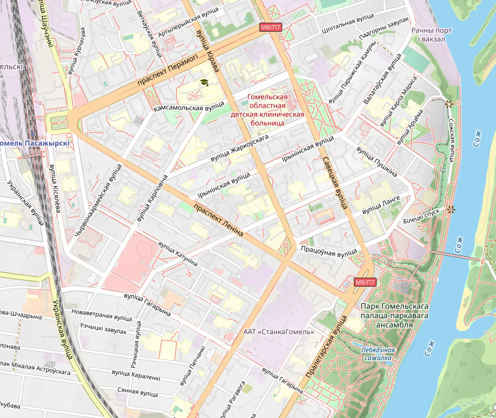

Экскурс по центральным улицам города Гомеля:

Наш маршрут:
1.Вокзал
2.Проспект Ленина
3.Советская
4.Трудовая
5.Билецкого
6.Пушкина
7.Ланге
8.Кирова
9.Площадь Ленина
10.Пролетарская
11.Школа №2
Вам надо нажать на улицу, информацию о которой вы хотите узнать
История школы №2

Средняя школа №2 имени Г.М. Склезнёвав Гомеле (ул. Ильича, 53) — одно из старейших учебных заведений города, основанное 8 ноября 1926 года на базе первых советских школ Новобелицы. В 1930-е годы она стала русскоязычной школой №12, а в июне 1941 года прямо из её стен на фронт ушел добровольческий батальон из 250 учителей и старшеклассников. Сегодня учреждение носит имя своего выпускника — Героя Советского Союза Георгия Склезнёва, бережно хранит память о войне в школьном музее Боевой славы и успешно сочетает богатые традиции с современным инженерно-техническим профильным обучением. На данный момент ей исполнилось 100 лет.
История города Гомеля
Официальная история города начинается с 1142 года, когда он впервые был упомянут в Ипатьевской летописи под названием «Гомий». Это событие связано с династической борьбой ольговичей (черниговских князей) за киевский престол. Однако археологические данные указывают на то, что укрепленное поселение существовало здесь значительно раньше. Гомель возник на землях восточнославянского племенного союза радимичей и быстро трансформировался из родового центра в важный укрепленный пункт. К XII веку город уже имел развитую структуру, состоящую из укрепленного детинца (цитадели) и окольного града, где проживали ремесленники и торговцы. Экономическая жизнь бурлила благодаря мастерству местных жителей и транзитной торговле. Археологические раскопки подтверждают высокий уровень развития ремесел: здесь процветали кузнечное и ювелирное дело, косторезное мастерство и гончарство. Находки предметов роскоши и византийских монет свидетельствуют о том, что местные купцы поддерживали связи с отдаленными регионами, а сам город был зажиточным и культурно развитым центром Посожья. История Гомеля — это калейдоскоп событий, отражающий его стратегическое значение на перекрестке культур и государств. Ниже представлены основные даты, сформировавшие облик и судьбу города.
- 1142 год — Первое летописное упоминание Гомеля (под названием «Гомий») в Ипатьевской летописи в контексте борьбы между князьями за киевский престол.
- 1335 год — Город входит в состав Великого княжества Литовского, становясь важным оборонительным пунктом на юго-восточных рубежах государства.
- 1535 год — После осады войсками Великого княжества Литовского и Королевства Польского, Гомель переходит от Московского государства обратно в состав ВКЛ.
- 1569 год — В результате Люблинской унии Гомель вместе с другими белорусскими землями становится частью новообразованного федеративного государства — Речи Посполитой.
- 1670 год — Гомель получает Магдебургское право, что способствует развитию самоуправления, ремесел и торговли в городе.
- 1772 год — В результате первого раздела Речи Посполитой город входит в состав Российской империи.
- 1775 год — Императрица Екатерина II дарует Гомель в вечное потомственное владение графу Петру Румянцеву-Задунайскому, что положило начало созданию знаменитого дворцово-паркового ансамбля.
- 1850 год — Через Гомель прокладывают шоссе Петербург–Киев и первую в Российской империи телеграфную линию, что превращает город в важный транспортный узел.
- 1926 год — Гомель входит в состав Белорусской ССР, что знаменует начало нового этапа в его развитии как крупного промышленного и культурного центра.
- 1938 год — Город становится административным центром новообразованной Гомельской области.
- 19 августа 1941 года — Начало оккупации города немецко-фашистскими войсками в ходе Второй мировой войны.
- 26 ноября 1943 года — Город освобожден войсками Белорусского фронта под командованием Константина Рокоссовского, начался период восстановления разрушенного хозяйства.
- 1991 год — После распада СССР Гомель становится одним из крупнейших областных центров независимой Республики Беларусь
Превращение Гомеля в один из крупнейших городов Беларуси было обусловлено рядом ключевых событий, которые кардинально изменили его экономический, культурный и градостроительный облик. Эпоха Румянцевых и Паскевичей (конец XVIII — XIX вв.) После вхождения в состав Российской империи Гомель был подарен графу П. А. Румянцеву-Задунайскому. Этот период стал поворотным: началось строительство великолепного дворца, который и сегодня является главной жемчужиной города. Вокруг дворца был разбит парк, а сам город начал застраиваться по единому плану, приобретая черты европейского классицизма. При новых владельцах открылись первые мануфактуры, что заложило основы будущей промышленности. Строительство транспортных артерий (середина XIX в.) Ключевым фактором экономического роста стало превращение Гомеля в важный транспортный узел. Через город прошло шоссе Петербург–Киев и первая в империи телеграфная линия. А с прокладкой Либаво-Роменской и Полесских железных дорог в 1870–1880-х годах Гомель получил прямое сообщение с портами Балтийского моря, центральными регионами России и Украиной. Это дало мощный импульс для развития торговли и промышленности. Промышленный бум (конец XIX — начало XX вв.) Благодаря железной дороге в Гомеле начался настоящий промышленный расцвет. Были основаны десятки предприятий, включая чугунолитейные заводы, лесопильни и знаменитую спичечную фабрику «Везувий». Город стал одним из крупнейших промышленных центров на территории современной Беларуси, что привело к стремительному росту населения и формированию рабочего класса. Советская индустриализация (1920–1930-е гг.) В советский период Гомель укрепил свой статус промышленного гиганта. Были построены новые крупные заводы, такие как «Гомсельмаш», станкостроительный завод и другие предприятия. Параллельно с индустриализацией велась активная городская застройка: появлялись новые жилые районы для рабочих, развивалась социальная инфраструктура, что определило современную планировку многих частей города. Послевоенное восстановление (1940–1950-е гг.) Во время Второй мировой войны Гомель был разрушен более чем на 80%. После освобождения в 1943 году началось масштабное восстановление города. Этот процесс не просто вернул город к жизни, но и сформировал новый архитектурный облик его центральной части, где многие здания были отстроены в стиле сталинского ампира, который и сегодня определяет вид главных улиц. Современный Гомель – общественно-политический центр межрегиональных связей Беларуси, России, город с развитой промышленностью, наукой и культурой, важный транспортный узел. В городе работает свыше ста предприятий машиностроения, легкой, пищевой, химической и других отраслей промышленности. Далеко за пределами Беларуси известны такие предприятия, как "ОАО "Гомельское ПО "Кристалл" - управляющая компания "Кристалл-холдинг", СП ОАО «Спартак», ОАО «Гомсельмаш», ОАО «Гомельдрев», ОАО «Коминтерн», ОАО «Гомельстекло », ОАО «8 Марта» и другие.